Hiroshi Kawada
A Japanese business application front-end engineer who is interested in the movement of HTML5 Enterprise Technology, Web Performance and Browser's Features for Enterprise IT operation. Follow me on Twitter. Read entries on my Blog. (Almost all Japanese only...)
Community
- html5j EnterpriseTechnical community in Japan, collaborate with html5j and discuss the use of Web standards technology for enterprise application. We have held events once for a month, since February 2013. We keep non-commerciality and neutrality on technical.
- Microsoft MVP for Internet ExplorerIn my opinion, Internet Explorer has the best functionality for enterprise browser. HTML5 support is not good, but advanced administration functions help us to make enterprise application better. When I wrote it on my blog, Team IE(JPN) gave this award.
2014 3Q
2014 2Q
- Software Design 2014.07 - How to make the performance better using Web Standards #03. (ja:技術評論社 Software Design 2014年7月号 - Web標準技術によるWebのパフォーマンス改善 第3回)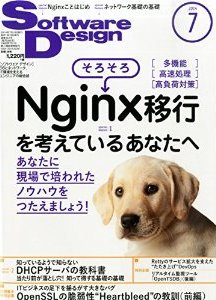
- Why is Apache Cordova so hot? (ja:Apache Cordovaスーパー勉強会#01 - 5分でわかる ”Apache Cordova” がなぜアツいのか？)
- Software Design 2014.06 - How to make the performance better using Web Standards #02. (ja:技術評論社 Software Design 2014年6月号 - Web標準技術によるWebのパフォーマンス改善 第2回)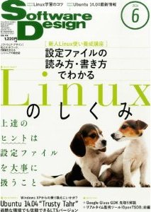
- Only Navigation Timing allows Web performance to audit transversely. (ja:NTTコミュニケーションズ HTML5 Experts.jp - Navigation Timingだからできる、Webアプリを俯瞰したパフォーマンス計測)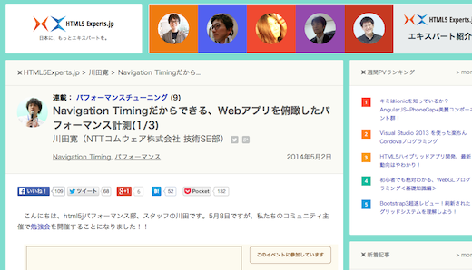
- Software Design 2014.05 - How to make the performance better using Web Standards #01. (ja:技術評論社 Software Design 2014年5月号 - Web標準技術によるWebのパフォーマンス改善 第1回)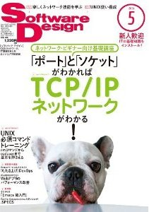
- Web love and hate Internet Explorer 6. (ja:リクルート CodeIQ Magazine - 愛と憎しみのIE6──当時のIE開発者と現開発者が本音と思い出を語り合う)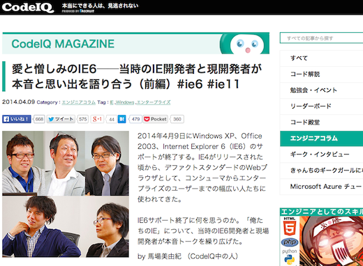
- Is Google Chrome available for Enterprise. (ja:Google Chromeは 企業系システムへの適用に 向いているのか？)
- Nikkei Linux 2014.05 - Visiting a Community. (ja:日経BP社 日経Linux 2014年5月号 - OSS支える、コミュニティー訪問)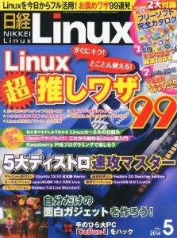
- HTML5 & Enterprise, Past, Present and Futures. (HTML5とエンタープライズITの過去、現在、そして未来を議論する)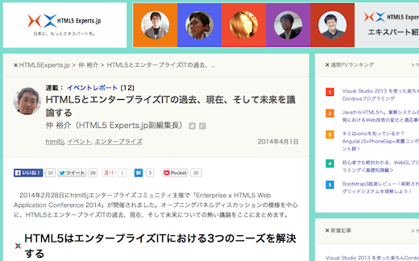
2014 1Q
- Four Meanings of HTML5 for Enterprise Developers. (ja:＠IT - エンタープライズ開発現場が知っておきたいHTML5の4つの意義)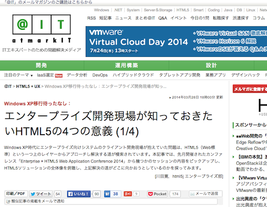
- Why is HTML5 important for Enterprise IT. (ja:＠IT - なぜエンタープライズITでHTML5が注目されているのか？Web業界のキーパーソンが議論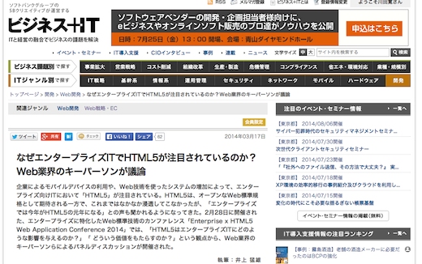
- Enterprise x HTML5 Web Application Conference 2014 - Three HTML5 Needs of Enterprise. (ja:エンタープライズ領域のHTML5 3つのニーズ)
- You should know, if you want to save your Enterprise System for 10 years. (ja:IE11プライベートセミナー - これから10年間企業のシステムを守るために知っておくべきこと)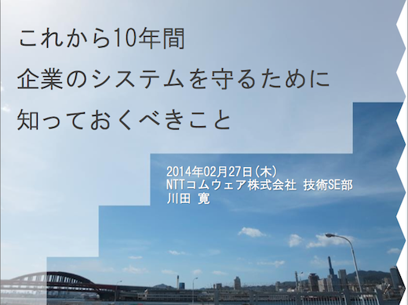
- Developers Summit 2014 - The impact of System Integrators by HTML5. What should we learn? (ja:HTML5がSIに与えた衝撃、エンジニアは何を学ぶべきか？)
- Software Design 2014.02 - What's the Point of Change on Software Development by Web Standards movements ? (ja:技術評論社 Software Design 2014年2月号 - ソフトウェア開発はどのように変わるのか？ Web標準編)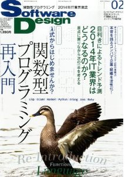
2013 4Q
- Submit x Windows 8 by Microsoft Japan - The Cheat-sheet of how to create effective IE11 Websites. For only 11 minutus.(ja: 日本マイクロソフト さぶみっと x Windows 8 - 11分で覚える、IE11対応Web制作のカンニングペーパー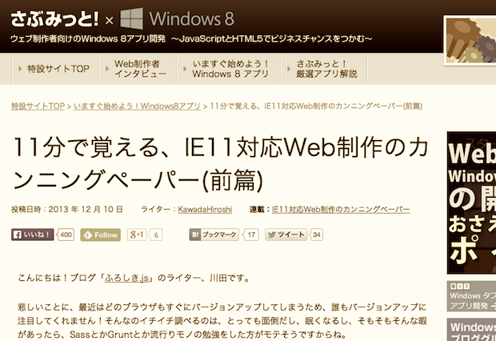
- Changing Enterprise by HTML5 that nobody thinks it's nacesary.(ja:HTML5 Conference 2014 - 無縁だと思われていたHTML5がエンタープライズWeb開発の特性を変えてしまった)
- Lightning Talk - In Japan, there are many applications, depend on Internet Explorer function. They kept temporarily by IE, but it never works next time. I alert that risk.(ja:Internet ExplorerはIE特化アプリから一時的に日本を救ってくれたけど次回はもう助けてくれないよという警告)
- Full OSS & HTML5 & RIA Development.(ja:OSC 2013 Fukuoka - フルOSSでHTML5-RIAなWeb開発)
- The 3 argues for Web Application and Java mixes each other.(ja:JJUG CCC 2013/Fall - HTML5時代のWebアプリとJavaが融合するための3つの議論)
- Joining HTML5 World. What is the change of Visual Studio 2013.(ja: Halloween Web Night - Visual Studio 2013 は何が違うのか？ HTML5時代に整合したWeb開発環境)
- Now, Enterprise Applications DO NOT use Struts.(ja: gihyo.jp - 「業務系システムは今すぐ脱Strutsを！」業務システムエンジニアのためのHTML5勉強会#04 活動報告)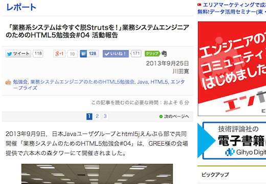
2013 3Q
- Begining Web Forms Design.(ja:Webの入力フォームデザイン入門)
- Enterprise Web without IE6.(ja: gihyo.jp - 脱IE6を果たしたエンタープライズのWebシステム，そしてHTML5 ～「業務システムエンジニアのためのHTML5勉強会#03」活動報告)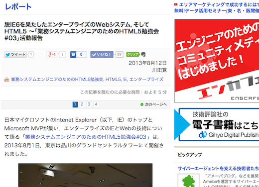
- LLM-UI/UX - Japan Label Element Markup Exam.(ja:全日本＜LABEL＞要素マークアップ検定)
- Developers Summit 2013 Summer - HTML5 x System Integrators. Business application needs the power of Web technology!(ja:HTML5 x SIer - 業務システムこそWebの力が必要だ！)